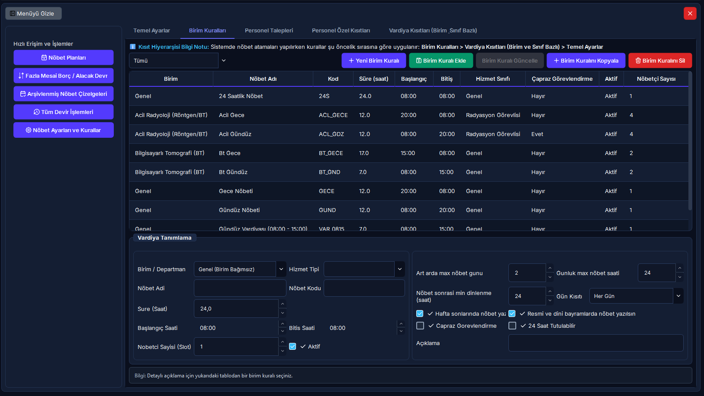

Departman Nöbet Slotları, Akıllı Saat Hesabı & Kural Kopyalama
Her kliniğin günlük, hafta içi ve hafta sonu/tatil vardiya slotlarını, aynı anda görev yapacak nöbetçi sayılarını, otomatik bitiş saati hesabını, 24 saat veya çapraz görev uygunluğunu ve birimler arası şablon aktarımını yönetmenizi sağlar.
Kısa Reçete: Departman Vardiya Slotlarını Tanımlama ve Çoğaltma
Klinik birimlerin gece, gündüz ve hafta sonu ihtiyaç duyduğu nöbetçi pozisyonlarının eksiksiz tanımlanması.
İlgili birimi seçip vardiya adı, kodu, başlangıç saati, süresi ve nöbetçi sayısını girerek [Birim Kuralı Ekle] butonuna basın; benzer birimler için [Birim Kuralını Kopyala] ile şablonu aktarın.
Bitiş saati gece yarısı devri dahil otomatik hesaplanır; dağıtım motoru bu aktif slotları günlük kontenjan ve gün kısıtına göre doldurur.
5N1K Kural ve Arayüz Çözümleme Tablosu
Birim Kuralları sekmesindeki vardiya hesaplama, kapsama ve aktarım mekanizmaları (buton adımları aşağıdadır).
Arayüz Ekran Görünümleri


Adım Adım İşlem Rehberi
1. Yeni Birim Nöbet Slotu Oluşturma ve Güncelleme
- [Birim Kuralları] sekmesinde filtre veya birim alanından ilgili servisi seçin; yeni bir kayıt için [Yeni Birim Kuralı] butonuna tıklayın.
- Vardiya Tanımlama bölümünde Nöbet Adı, Nöbet Kodu, Başlangıç Saati, Süre (örneğin 20:00 ve 12 saat; bitiş otomatik 08:00 olur), Nöbetçi Sayısı ve geçerli gün kapsamını belirleyin; gerekirse [Aktif], [24 Saat Tutulabilir] ve [Capraz Gorevlendirme] kutularını işaretleyin.
- Slotu kaydetmek için [Birim Kuralı Ekle] butonuna basın; mevcut bir satırı değiştirirken [Birim Kuralı Güncelle], kullanılmayan bir slotu kaldırmak için [Birim Kuralını Sil] butonunu kullanın.
2. Birim Kuralını Başka Bir Birime Kopyalama
- Araç çubuğundaki [Birim Kuralını Kopyala] butonuna tıklayın.
- Kaynak birim ile hedef birimi seçin, hedef birimin mevcut slotlarının silineceğini bildiren onay mesajını teyit ederek aktarımı tamamlayın.
Sıkça Sorulan Sorular (SSS)
Bitiş saatini neden doğrudan değiştiremiyorum?
Vardiya süreleri ile bitiş saati arasındaki tutarsızlığı önlemek için bitiş saati başlangıç ve süre üzerinden otomatik hesaplanır. Bitiş saatini değiştirmek için süreyi veya başlangıç saatini güncellemeniz yeterlidir.
Kural kopyalarken hedef birimdeki eski slotlara ve geçmiş nöbetlere ne olur?
Aynı birimde mükerrer vardiya kodu ve saat çakışması oluşmasını engellemek için kopyalama işlemi hedef birimin aktif şablonunu kaynak birimle eşitler; geçmiş nöbet çizelgelerinde kullanılmış eski slotlar veri kaybı olmaması için silinmez ve pasife alınır. Mevcut aktif slotları koruyarak ekleme yapmak istiyorsanız [Birim Kuralı Ekle] butonunu kullanmalısınız.
Birden fazla personelin aynı nöbete yazılması nasıl sağlanır?
İlgili vardiya tanımında Nöbetçi Sayısı değerini gereken kişi adedine çıkarıp [Birim Kuralı Güncelle] butonuna basmanız yeterlidir.